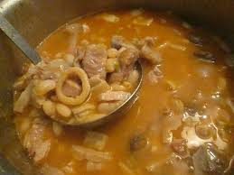

Sus orígenes se remontan a la época prehispánica. Precisamente, a los pueblos incas. Versátil, puede variar de acuerdo a la región y al país en que se elabore. El locro es un plato que puede variar y adaptarse a la disponibilidad de ingredientes presentes en cada región y/o país donde se prepare
Lista de Ingredientes para su preparacion:
2 tazas de maíz blanco remojado
1 litro de agua
300 gramos de carne de ternera en trozos (paleta, roast beef, etc)
300 gramos de carne de cerdo cortado en trozos
2 Caldo de Verdura
200 gramos de panceta cortado en cubos
1 taza de porotos remojados y cocidos
2 chorizos cocidos en ruedita
2 batatas cortado en trozos
1/2 kg de zapallo cortado en trozos
2 cucharadas de aceite
1 cebolla finamente picada
1 cebolla de verdeo picada
1 ají picante picado
1 cucharada de pimentón
Alimento con muchas calorías y nutrientes, el locro resulta muy adecuado para consumir durante los inviernos o en zonas frías. Tradicionalmente se consume de manera masiva el 1 y el 25 de mayo, día en que se conmemora la formación del primer gobierno patrio argentino, el cual se estableció el 25 de mayo de 1810.
Pasos a seguir para el locro:
Lavar el maíz blanco y remojarlo en agua por 1 noche. Escurrir y agregar agua limpia nuevamente. Reservar.
Cocinar el maíz en una cacerola a fuego medio junto al agua por 20 minutos aprox . Reservar.
En otra olla saltear a fuego medio la carne de ternera, la panceta en cubos, el cerdo (todo en trozos chicos) hasta que se dore ligeramente.
Sumar el maíz cocido junto al agua, el caldo Knorr y continuar la cocción durante 30 a 40 minutos más. Sumar los chorizos, las batatas, el zapallo en trozos medianos y los porotos.
Continuar cocinando lentamente por 20 a 40 minutos más aprox. (Incorporar más agua durante su cocción si fuera necesario)
Revolver de vez en cuando.
Para la preparacion de la salsa: En una sartén caliente junto al aceite saltear las cebollas picadas y el ají picado.
Condimentar con el pimentón y servir el locro junto a la salsa picante y a disfrutar.
Foto de un locro

Video de un Argentino preparando locro:
Mapa de la Region de origen en Argentina(Algun lugar de la cordillera de los Andes)